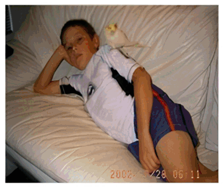
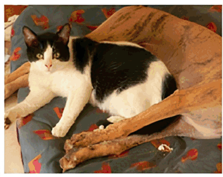
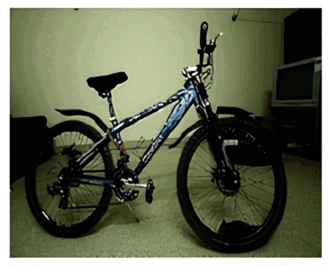
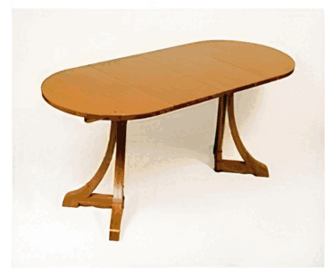
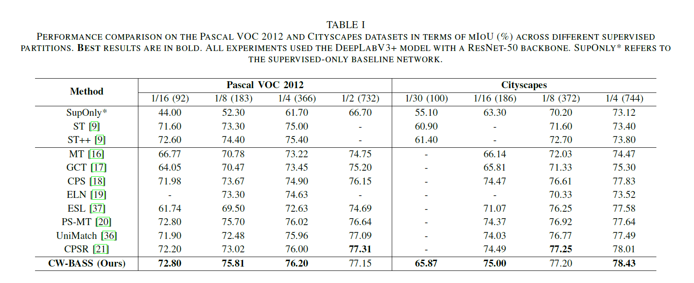
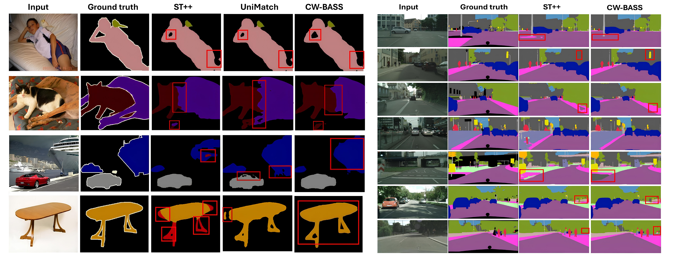

CW-BASS: Confidence-Weighted Boundary-Aware Learning for Semi-Supervised Semantic Segmentation
Abstract
Semi-supervised semantic segmentation (SSSS) aims to improve segmentation performance by utilizing large amounts of unlabeled data with limited labeled samples. Existing methods often suffer from coupling, where over-reliance on initial labeled data leads to suboptimal learning; confirmation bias, where incorrect predictions reinforce themselves repeatedly; and boundary blur caused by limited boundary-awareness and ambiguous edge cues. To address these issues, we propose CW-BASS, a novel framework for SSSS. We assign confidence weights to pseudo-labels to mitigate the impact of incorrect predictions, and leverage boundary-delineation techniques that remain underutilized in SSSS. Extensive experiments on Pascal VOC 2012 and Cityscapes demonstrate that CW-BASS achieves state-of-the-art performance. Notably, CW-BASS achieves a 65.9% mIoU on Cityscapes under a challenging 1/30 split (100 images), highlighting its effectiveness in limited-label settings.
Key Contributions
Reduces coupling by adjusting pseudo-label influence based on predicted confidence scores, downweighting unreliable predictions.
Mitigates confirmation bias with an adaptive mechanism that learns to filter pseudo-labels based on model performance.
Tackles boundary blur using explicit boundary supervision to refine segmentation near object edges.
Reduces label noise through a progressive strategy that refines pseudo-label confidence during training.
Visual Results (Pascal VOC 2012)





Quantitative Results

Performance comparison (mIoU %) on Pascal VOC 2012 and Cityscapes across different label partitions. All experiments use DeepLabV3+ with ResNet-50. Best results in bold.
Qualitative Results

Qualitative comparison on Pascal VOC 2012 and Cityscapes. CW-BASS produces sharper boundaries and more accurate segmentation masks compared to prior methods.
Citation
@inproceedings{tarubinga2025cwbass,
author = {Tarubinga, Ebenezer and Kalafatovich, Jenifer
and Lee, Seong-Whan},
title = {CW-BASS: Confidence-Weighted Boundary-Aware Learning
for Semi-Supervised Semantic Segmentation},
booktitle = {2025 International Joint Conference on Neural
Networks (IJCNN)},
year = {2025},
pages = {1--8},
address = {Rome, Italy},
doi = {10.1109/IJCNN64981.2025.11227871},
keywords = {Semi-Supervised Learning, Semantic Segmentation,
Pseudo-Labeling, Confidence Weighting}
}